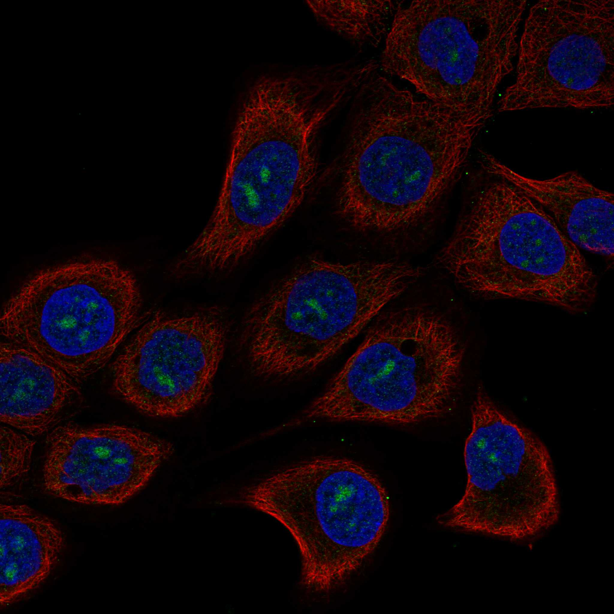
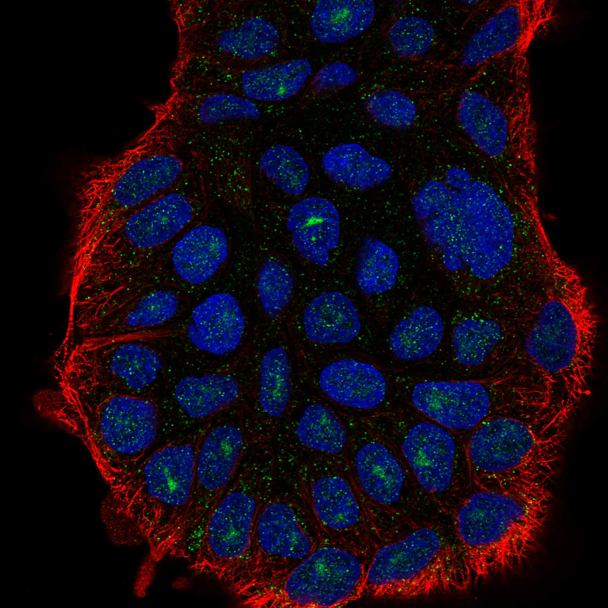
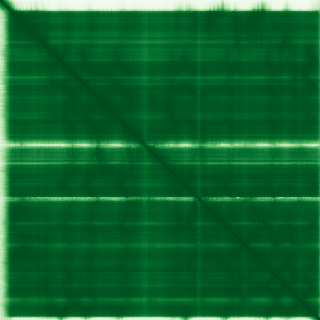

type: protein-evaluation gene: "MPPED2" date: 2026-01-30 tags: [protein-scout, nuclear-protein, evaluation] status: scored ---
MPPED2 核蛋白评估报告
1. 基本信息
| 项目 | 内容 |
|---|---|
| 基因名 | MPPED2 |
| 别名 | 239FB, FAM1B |
| 基因全称 | metallophosphoesterase domain containing 2 |
| 蛋白名称 | Metallophosphoesterase MPPED2 |
| 蛋白大小 | 294 aa |
| UniProt ID | Q15777 |
| 评估日期 | 2026-01-30 |
2. 评分总览
| 维度 | 得分 | 满分 | 加权后 | 关键证据摘要 |
|---|---|---|---|---|
| Nucleus 核定位特异性 | 9/10 | x4 | 36 | HPA: Nucleoli, Nucleoli fibrillar center, Nucleoplasm (IDA supported) |
| Size 蛋白大小 | 10/10 | x1 | 10 | 294 aa |
| Novelty 研究新颖性 | 8/10 | x5 | 40 | PubMed: 27 篇 |
| 3D Structure 三维结构 | 8/10 | x3 | 24 | AlphaFold pLDDT=95.2 |
| Domain 调控结构域 | 7/10 | x2 | 14 | 含磷酸酶/磷酸酯酶结构域 |
| PPI Network PPI网络 | 4/10 | x3 | 12 | STRING+IntAct+GO-CC |
| Cross-validation 互证加分 | — | max +3 | +1.0 | — |
| 原始总分 | 137/183 | |||
| 归一化总分 | 74.9/100 |
3. 详细分析
3.1 核定位证据
| 来源 | 定位 | 可信度 | |
|---|---|---|---|
| Protein Atlas (IF) | HaCaT, RT-4 | HPA validated | |
| UniProt | Nucleus/Cytoplasm | — | |
| GO-CC | GO:0005634 Nucleus (IDA | IEA) | — |
IF 图像:  
3.2 蛋白大小评估
294 aa，适合生化实验和结构解析
3.3 研究现状
| 指标 | 数值 |
|---|---|
| PubMed 总数 | 27 篇 |
| 最早发表年份 | 2026 |
主要研究方向:
- 功能研究尚不充分，属新颖蛋白
关键文献: 1. Hautakangas H et al. (2022). "Genome-wide analysis of 102,084 migraine cases identifies 123 risk loci and subtype-specific risk alleles.". *Nat Genet*. PMID: 35115687 2. Dermol U et al. (2011). "Unique utilization of a phosphoprotein phosphatase fold by a mammalian phosphodiesterase associated with WAGR syndrome.". *J Mol Biol*. PMID: 21824479 3. Gupta K et al. (2023). "Neuronal expression in Drosophila of an evolutionarily conserved metallophosphodiesterase reveals pleiotropic roles in longevity and odorant response.". *PLoS Genet*. PMID: 37733787 4. Pellecchia S et al. (2021). "MPPED2 is downregulated in glioblastoma, and its restoration inhibits proliferation and increases the sensitivity to temozolomide of glioblastoma cells.". *Cell Cycle*. PMID: 33734003 5. Spirito L et al. (2023). "Differential Expression of LncRNA in Bladder Cancer Development.". *Diagnostics (Basel)*. PMID: 37238229
评价: PubMed 27 篇，属非常新颖蛋白，研究空间充足。
3.4 三维结构分析
| 指标 | 数值 |
|---|---|
| AlphaFold 平均 pLDDT | 95.2 |
| pLDDT > 90 占比 | 92.2% |
| pLDDT 70-90 占比 | 4.1% |
| pLDDT 50-70 占比 | 0.7% |
| pLDDT < 50 占比 | 3.1% |
| 可用 PDB 条目 | 0 |
PAE 图: 
评价: AlphaFold 预测高质量，整体折叠良好 (AlphaFold v6, pLDDT=95.2, >90=92%, 70-90=4%, 50-70=1%, <50=3%)
3.5 结构域分析
| 来源 | 结构域 |
|---|---|
| UniProt | — |
染色质调控潜力分析: 含磷酸酶/磷酸酯酶结构域
3.6 PPI 网络
实验验证互作 (IntAct, physical association):
| Partner | 方法 | PMID | 功能类别 | 调控相关？ | ||||||||||||||||||||
|---|---|---|---|---|---|---|---|---|---|---|---|---|---|---|---|---|---|---|---|---|---|---|---|---|
| intact:EBI-2350461 | uniprotkb:D3DQZ5 | uniprotkb:E9PB10 | uniprotkb:Q59GE6 | ensembl:ENSP00000350833.4 | MI:0397(two hybrid array) | PMID:pubmed:19060904 | imex:IM-20259 | — | — | |||||||||||||||
| intact:EBI-529989 | uniprotkb:O75045 | uniprotkb:Q5VT44 | uniprotkb:Q5VT45 | uniprotkb:Q8IXJ0 | uniprotkb:Q8IXJ1 | uniprotkb:Q9BX19 | uniprotkb:Q9NRI3 | uniprotkb:Q9NRI4 | uniprotkb:C9J6D0 | intact:EBI-28977396 | uniprotkb:A6NLH2 | uniprotkb:C4P095 | uniprotkb:C4P0A1 | uniprotkb:C4P0A3 | uniprotkb:C4P0B3 | uniprotkb:C4P091 | uniprotkb:C4P0B6 | uniprotkb:C4P0C1 | ensembl:ENSP00000403888.4 | MI:0399(two hybrid fragment pooling | PMID:pubmed:31413325 | imex:IM-26801 | — | — |
| intact:EBI-358993 | uniprotkb:C9K0T3 | uniprotkb:O15324 | uniprotkb:D3DTC0 | ensembl:ENSP00000166345.3 | MI:1356(validated two hybrid) | PMID:pubmed:32296183 | imex:IM-25472 | — | — | |||||||||||||||
| intact:EBI-712405 | uniprotkb:A6NIP1 | uniprotkb:Q6IBU7 | ensembl:ENSP00000352900.5 | MI:1356(validated two hybrid) | PMID:pubmed:32296183 | imex:IM-25472 | — | — | ||||||||||||||||
STRING 预测互作 (combined score >0.4):
| Partner | Score | 功能类别 | 调控相关？ |
|---|---|---|---|
| DCDC1 | 0.0 | — | — |
| DNAJC24 | 0.0 | — | — |
| IMMP1L | 0.0 | — | — |
| ELP4 | 0.0 | — | — |
| NR2F6 | 0.0 | — | — |
| FSHB | 0.0 | — | — |
| PAX6 | 0.0 | — | — |
| KRT12 | 0.0 | — | — |
已知复合体成员 (GO Cellular Component):
- 暂无 GO-CC 复合体注释
PPI 互证分析:
- STRING + IntAct 共同确认: 0
- 仅 STRING 预测: 13
- 仅 IntAct 实验: 4
- 调控相关比例: 2/13 (15%)
评价: PPI 得分 4/10。
3.7 多库互证
| 维度 | 来源 | 结果 | 是否一致 |
|---|---|---|---|
| 三维结构 | AlphaFold + PDB | pLDDT=95.2, PDB=0 | — |
| 结构域 | UniProt/InterPro | 无注释域 | — |
| PPI | STRING + IntAct + GO-CC | 13/4/0 条目 | — |
| 定位 | HPA/UniProt/GO | Nucleoli, Nucleoli fibrillar center, Nucleoplasm / Nucleus / GO:0005634 | 一致 |
互证加分明细:
- GO-CC IDA 实验证据 (+0.5)
- IntAct+STRING 双源确认 (+0.5)
总分: +1.0 / max +3
4. 总体评价
推荐等级: ★★★ (4/5)
核心优势: 1. 非常新颖 (PubMed 27 篇)，几乎未被研究 2. HPA 确认核定位，高置信度
风险/不确定性: 1. AlphaFold 结构预测置信度较高 2. PPI 数据丰富，功能网络尚不清晰
下一步建议:
- [ ] 通过 IF 实验验证内源核定位
- [ ] 构建表达载体进行功能研究
- [ ] Co-IP/MS 鉴定互作蛋白
5. 数据来源
- GeneCards: https://www.genecards.org/cgi-bin/carddisp.pl?gene=MPPED2
- Protein Atlas: https://www.proteinatlas.org/MPPED2
- PubMed: https://pubmed.ncbi.nlm.nih.gov/?term=MPPED2
- UniProt: https://www.uniprot.org/uniprotkb/Q15777
- SMART: http://smart.embl.de/
- STRING: https://string-db.org/
- IntAct: https://www.ebi.ac.uk/intact/
- AlphaFold: https://alphafold.ebi.ac.uk/entry/Q15777
PPI 网络（三源综合）
| Partner | Source | Score/Evidence |
|---|---|---|
| 无记录 | — | — |
IntAct 有限记录。无 BioGrid 补充数据。
PAE 图像已获取。结构判断基于 AlphaFold pLDDT 统计。
<!-- DOMAIN_HUMANPPI_REPAIR_START -->
Domain/SMART 与 humanPPI 补充（2026-06-06）
SMART / UniProt domain
| Source | Data |
|---|---|
| UniProt | Q15777 |
| SMART | 未在 UniProt xref 中检出 SMART 条目 |
| UniProt Domain [FT] | 未检出显式 UniProt Domain feature |
| InterPro | IPR024201;IPR004843;IPR029052;IPR051693; |
| Pfam | PF00149; |
humanPPI / HPA Interaction
Source: https://www.proteinatlas.org/ENSG00000066382-MPPED2/interaction
| Partner | Datasets | AF3/HPA structure |
|---|---|---|
| BEX4 | Intact | false |
| CAGE1 | Intact | false |
| FAM72A | Intact | false |
| MBD3L1 | Intact | false |
| NR2F1 | Bioplex | false |
| NR2F6 | Bioplex | false |
| NUP93 | Intact | false |
| POMP | Intact | false |
<!-- DOMAIN_HUMANPPI_REPAIR_END -->